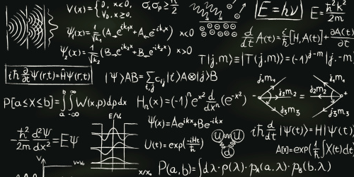
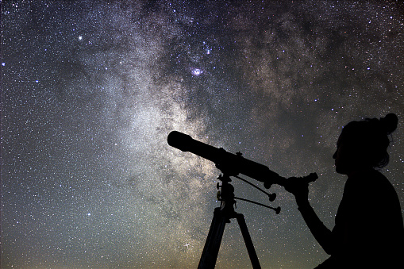

For girls in particular, STEM education provides rich opportunities for forming a self-image of being capable, resourceful, and able to contribute to solve important problems, which is critical for girls given their limited opportunities to act and be seen as thinkers and innovators in their daily lives.
What is STEM?
At it’s most basic, STEM stands for Science, Technology, Engineering and Math. Alternatively, STEAM stands for Science, Technology, Engineering, Arts and Math. But STEM education is far more than just sticking those subject titles together. It’s a philosophy of education that embraces teaching skills and subjects in an a way that resembles real life.
All of this effort is to meet a need. According to a report by the website STEMconnector.org, by 2018, projections estimate the need for 8.65 million workers in STEM-related jobs. The manufacturing sector faces an alarmingly large shortage of employees with the necessary skills — nearly 600,000. The field of cloud computing alone will have created 1.7 million jobs between 2011 and 2015, according to the report.
The U.S. Bureau of Labor Statistics projects that by 2018, the bulk of STEM careers will be:
Computing – 71 percent
Traditional Engineering – 16 percent
Physical sciences – 7 percent
Life sciences – 4 percent
Mathematics – 2 percent
Subjects
At it’s most basic, STEM stands for Science, Technology, Engineering and Math. Alternatively, STEAM stands for Science, Technology, Engineering, Arts and Math. But STEM education is far more than just sticking those subject titles together. It’s a philosophy of education that embraces teaching skills and subjects in an a way that resembles real life.

Physics
An introduction to classical mechanics with topics focuses on motion of the macroscopic world including Newton's Laws of Motions, Projectile motion, transitional and rotational motion, momentum, consesrvation of energy and circular motions.
Physics is one of the oldest academic disciplines and, through its inclusion of astronomy, perhaps the oldest. Over much of the past two millennia, physics, chemistry, biology, and certain branches of mathematics were a part of natural philosophy, but during the Scientific Revolution in the 17th century these natural sciences emerged as unique research endeavors in their own right. Physics intersects with many interdisciplinary areas of research, such as biophysics and quantum chemistry, and the boundaries of physics are not rigidly defined.
Astronomy
Astronomy is one of the oldest natural sciences. The early civilizations in recorded history made methodical observations of the night sky. These include the Babylonians, Greeks, Indians, Egyptians, Chinese, Maya, and many ancient indigenous peoples of the Americas. In the past, astronomy included disciplines as diverse as astrometry, celestial navigation, observational astronomy, and the making of calendars. Nowadays, professional astronomy is often said to be the same as astrophysics.
Professional astronomy is split into observational and theoretical branches. Observational astronomy is focused on acquiring data from observations of astronomical objects. This data is then analyzed using basic principles of physics. Theoretical astronomy is oriented toward the development of computer or analytical models to describe astronomical objects and phenomena.

Computer Science
Computer science is the study of algorithmic processes, computational machines and computation itself.[1] As a discipline, computer science spans a range of topics from theoretical studies of algorithms, computation and information to the practical issues of implementing computational systems in hardware and software.
Its fields can be divided into theoretical and practical disciplines. For example, the theory of computation concerns abstract models of computation and general classes of problems that can be solved using them, while computer graphics or computational geometry emphasize more specific applications. Algorithms and data structures have been called the heart of computer science.